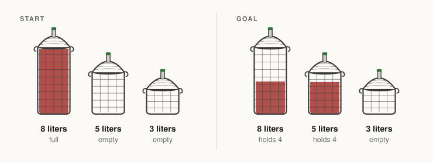
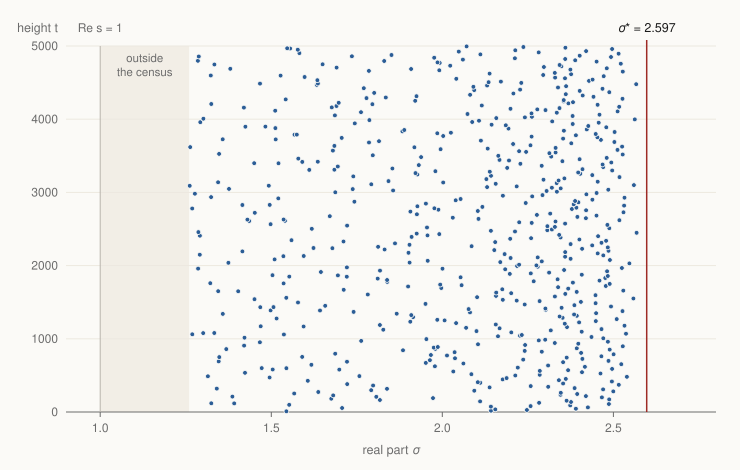
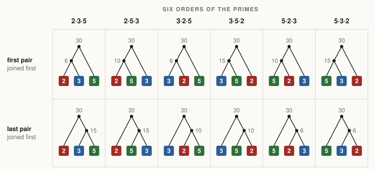
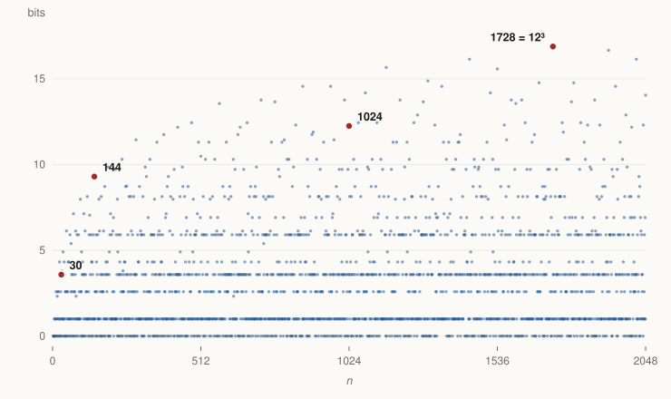
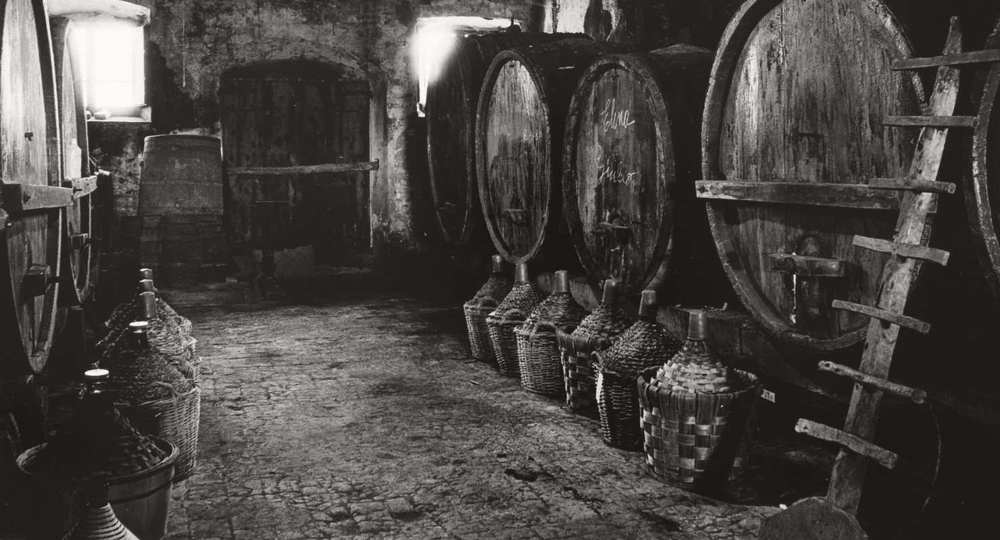
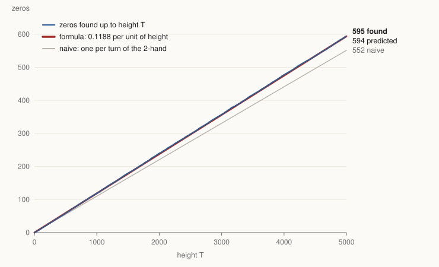

My grandfather had a riddle he liked to ask over wine, poured from the damigiana, the fat glass demijohn in its straw cage that lived in his cellar. You have eight liters of wine in one unmarked jug; two more unmarked jugs, both empty, can hold five and three. A pour stops only when the source runs empty or the target runs full, and no eyeballing. Divide the wine into four liters and four liters.

The solution takes seven pours, and I will leave it to you. I care more about why a solution exists at all. Five and three have no common divisor: no whole number bigger than 1 divides both. Because of that, patient pouring can measure out any whole number of liters from 0 to 8. Give him jugs of 6 and 2 instead and the wine never leaves the even numbers. Every pour then moves an even amount, so an odd liter can never appear, however clever you are. What a pouring game can reach is decided by the greatest common divisor (gcd) of the two jugs, the largest whole number that divides both. It is 1 for 5 and 3, and 2 for 6 and 2. (A quantum factoring algorithm near the end of this post also finishes with a gcd.)
Over the years I have come to see his wine puzzle as a puzzle about what numbers do not share. This post follows that idea to the primes, where nothing is shared at all: multiply 2 by itself as many times as you like and you will never land on a power of 3, or of 5, or of any other prime. That one fact scatters the zeros of a certain function (the points where it equals zero) so that no line can hold them, and it also gives an exact formula that counts them anyway. The function is a close relative of Riemann's zeta function, so I start with zeta.
The most famous unsolved problem in mathematics is a claim that certain points line up. The points belong to a function built from the simplest series there is, one term for every whole number:
$$\zeta(s) = \frac{1}{1^s} + \frac{1}{2^s} + \frac{1}{3^s} + \cdots$$
If $s$ is a real number bigger than 1, this sum adds up to a finite number; for $s = 2$ it is $\pi^2/6$. The interesting move is to let $s$ be complex. A complex number is a point in a plane. The number $s = \sigma + it$ sits $\sigma$ units to the right and $t$ units up, where $i$ is the square root of $-1$. I will call $\sigma$ the real part of $s$, written $\operatorname{Re}\, s$, and $t$ its height. With a complex $s$, each term of the sum becomes an arrow in that plane, with a length and a direction, and adding the terms means placing the arrows tip to tail. The length of an arrow is written with bars, as in $|\zeta|$.
The sum still only makes sense when $\sigma > 1$, and further left it never settles on a value. But there is a standard way to extend the function to almost the whole plane, and only one way. The extended function has zeros, points where its value is exactly zero. Some are easy: they sit at $-2, -4, -6, \ldots$ and are called trivial. The rest are called nontrivial, and in 1859 Riemann conjectured that all of them lie on a single vertical line, $\operatorname{Re}\, s = \tfrac12$, now called the critical line. Trillions of them have been computed, and every one sits on that line, yet nobody can prove that all of them must, or explain why they do.
This post is about a relative whose zeros do the opposite. Keep only the prime terms of the series:
$$P(s) = \sum_p \frac{1}{p^s} = \frac{1}{2^s} + \frac{1}{3^s} + \frac{1}{5^s} + \cdots$$
This is the prime zeta function; the symbol $\sum_p$ means "add over every prime $p$". Instead of asking where $P$ is zero, I will ask where it equals exactly one quarter: the solutions of $P(s) = \tfrac14$. They are the zeros of $P - \tfrac14$, so they count as zeros here. The next section shows where the quarter comes from. Figure 3 is my census of them: all 595 in the region I searched, with real part $\sigma$ between 1.26 and 2.72 and height $t$ from 0.3 to 5000.

Their real parts are spread between 1.2615 and 2.5679. No line holds them, vertical or slanted, and rounding cannot be the cause, since every position is known to fifteen digits. Riemann's zeros are only believed to line up, and these can be shown not to.
Still, the cloud has an exact density. Later I write down a formula for the number of zeros per unit of height, in which every prime is weighted by how often it beats all the other primes, plus the quarter, put together, in a sense made precise there. Checked against the census, the formula predicts 594 zeros where I found 595. The same machinery also turns up inside a transformer, the architecture behind today's AI language models, and inside Shor's quantum factoring algorithm. A side check along the way fixed a number in a reference book that was off by exactly one.
Where the equation comes from
The quarter falls out of counting trees, and the trees start with a small act of stubbornness, leaving $2 \cdot 3 \cdot 5$ unsimplified and remembering how 30 was built. Multiplication joins two numbers at a time, so building 30 from its primes takes two choices. One is the order of 2, 3, and 5 (six ways). The other is whether the first pair or the last pair is joined first, as in $(2 \cdot 3) \cdot 5$ against $2 \cdot (3 \cdot 5)$ (two ways); I will call this second choice the nesting. That makes twelve assembly histories, all with the same label, 30. Each one can be drawn as a small tree, with the primes as leaves and a fork wherever two pieces are joined.

For a century and a half physicists have studied cases where many hidden arrangements sit behind one visible reading. A thermometer in this room shows one number, but countless different arrangements of the air's molecules would produce the same reading. Physicists call the reading a macrostate and each hidden arrangement a microstate, so 30 is a macrostate with twelve microstates, its histories. You can also forget part of a history. Forget the nesting and keep only the order of the primes, and the twelve collapse to six. Forget the order instead and keep only which two primes were joined first, so that $2 \cdot 3$ and $3 \cdot 2$ count as the same, and they collapse to three: 2 with 3 first, 2 with 5 first, or 3 with 5 first. Forget both and only the bare number is left. What the label hides is measured in bits, a bit being the information in one yes-or-no answer, and picking one item out of twelve takes $\log_2 12 \approx 3.6$ of them (2 raised to the power 3.6 is about 12), so 3.6 bits is the entropy of 30. For a number like 30, with no prime repeated, these counts depend only on how many primes it has; repeated primes make the counting subtler.
Here are the same counts for a few more numbers, in order of how much their label hides:
| number | built from | histories | entropy |
|---|---|---|---|
| 7 | a prime | 1 | 0 bits |
| 6 | $2 \cdot 3$ | 2 | 1.0 |
| 12 | $2^2 \cdot 3$ | 6 | 2.6 |
| 30 | $2 \cdot 3 \cdot 5$ | 12 | 3.6 |
| 64 | $2^6$ | 42 | 5.4 |
| 210 | $2 \cdot 3 \cdot 5 \cdot 7$ | 120 | 6.9 |
| 144 | $2^4 \cdot 3^2$ | 630 | 9.3 |
| 1024 | $2^{10}$ | 4862 | 12.2 |
Primes sit at zero bits, since seeing 7 tells you everything about how 7 was made. The 42 histories of 64 are all nesting. Its six factors are all 2s, so reordering them changes nothing, and only the 42 possible tree shapes count. The number 1024 hides twelve bits behind four digits, and 144 gets a story of its own in the last section. Figure 5 plots every number up to 2048 at once.

Physicists handle situations like this with a standard method built on energy. Energy is additive: put two systems together and their energies add. For numbers, the quantity that adds when you multiply is the logarithm, since $\log(2 \cdot 3) = \log 2 + \log 3$. From here on, log means the natural logarithm, the one built on the number $e \approx 2.718$, so that $e^{\log n} = n$. Give the number $n$ the energy $\log n$, and joining two trees adds their energies, as it should. Physics weights each state by its energy. In a gas at temperature $T$, a state of energy $E$ turns up with a weight proportional to $e^{-E/kT}$, where $k$ is a fixed conversion factor called Boltzmann's constant. This is the Boltzmann factor: high-energy states are rare, and rarer the colder it gets. Physicists usually write it as $e^{-\beta E}$, with $\beta = (kT)^{-1}$ the inverse temperature; I set $k$ to 1 from here on. Treat the histories of all the whole numbers as the states of a gas, and let $s$ play the role of $\beta$. The weight of a history of $n$ is then $e^{-s \log n} = n^{-s}$, which is just the term $1/n^s$ of the zeta series. Adding up the weights of all the states gives
$$Z(s) = \sum_n \frac{g(n)}{n^s},$$
where $g(n)$ counts the histories of $n$. Physicists call this sum the partition function, and it is the most useful object in their subject, because nearly every average property of the gas can be read off from it. Each of the ways of forgetting from a moment ago counts histories differently, so each has its own $g$ and its own partition function. That gives four gases, which form a ladder: the bare numbers at the bottom, then the order alone, then the nesting alone, and the full histories at the top. (For 30 the order keeps more histories than the nesting, six against three, but repeated primes favor the nesting: for 64 the order keeps 1 and the nesting 6.)
At the bottom rung each number has exactly one state, itself, so $g = 1$ and $Z$ is Riemann's zeta, the very series this post opened with. Reading zeta as a gas is an old idea, and not mine. It starts from Euler's product, which rewrites the same sum as a product with one factor per prime ($\prod_p$ means "multiply over every prime $p$"):
$$\zeta(s) = \prod_p \frac{1}{1 - p^{-s}}$$
Each factor is shorthand for $1 + p^{-s} + p^{-2s} + \cdots$, one term per power of $p$. Multiply all the factors out and every whole number appears once, because each is built from primes in only one way (mathematicians call this unique factorization). Read with a physicist's eyes, this product is the partition function of a Bose gas: a gas of particles that are allowed to pile up in the same state, like the particles of light. Each prime is a mode, a slot those particles can occupy, with energy $\log p$, and a number's factorization says how many particles sit in each slot. For example, $12 = 2^2 \cdot 3$ puts two particles in the 2-slot and one in the 3-slot. The average number in the $p$-slot works out to $1/(p^s - 1)$, which is Planck's famous formula for light, $1/(e^{\beta \varepsilon} - 1)$, with $\varepsilon = \log p$ and $\beta = s$, since $e^{s \log p} = p^s$. Bernard Julia named this the free Riemann gas in 1990 (free because its particles ignore each other), and Donald Spector found the same idea independently that year. For years my own job was computing how heat flows through crystals, where the same product appears with $\hbar\omega$, the energy of one quantum of vibration at frequency $\omega$, in place of $\log p$, so I knew this formula long before I met it in number theory.
At the top rung sit the full histories, and I will call that gas the tree gas. Every tree in it is one of two things. Either it is a single prime, with nothing to join, the way the whole history of 7 is just 7. Or its last step joined two smaller trees, the way every history of 30 ends by joining a history of one factor with a history of the other: 6 with 5, 2 with 15, or 10 with 3. So a tree is a prime or a pair of trees, and two rules we already have turn that sentence into an equation. When a state can be one thing or another, the weights of the alternatives add, as in any sum over states. When two trees are joined, their energies add ($\log 6 + \log 5 = \log 30$), so their weights multiply ($30^{-s} = 6^{-s} \times 5^{-s}$). Summing over all trees therefore gives the tree gas's partition function, which I write $Z_T$, with T for tree:
$$Z_T(s) = P(s) + Z_T(s)^2$$
The first term is the single primes, whose weights add up to $P$. The second is the pairs: two smaller trees, each ranging over all trees, so $Z_T$ times $Z_T$. Multiplying out $(a + b + \cdots)(a + b + \cdots)$ gives one term for every pair, first piece times second piece, which is one term for every way to join two trees. This is a quadratic equation, and its solution is $Z_T = \tfrac12\left(1 - \sqrt{1 - 4P}\right)$. A square root breaks down where the quantity under it passes through zero. Just past that point the quantity turns negative, and among ordinary numbers the root no longer exists. Here that happens where $1 - 4P = 0$, which is to say where $P(s) = \tfrac14$, and that is where the quarter comes from. (The same square root appears in the classic count of binary trees, trees whose every fork splits in two, which gives the Catalan numbers; the 42 and 4862 in the table are two of them.) On the real axis, the horizontal line where $s$ is an ordinary number, this happens once, at $s = \sigma^* = 2.5973851271346716$, where $Z_T$ equals exactly $\tfrac12$. This real solution sits at height 0, below the census window, so it is not one of the 595. For $s$ below $\sigma^*$ (a smaller inverse temperature, so a hotter gas), the sum over all trees grows without limit. So $\sigma^*$ marks the hottest the tree gas can get, its limiting temperature, written as an inverse temperature. Every rung of the ladder has such a limit: $s = 1$ for the bare numbers, 1.3994 for the order alone, 1.9885 for the nesting alone, and 2.5974 for full histories. The faster a gas's states multiply, the colder the point at which its sum gives out. Full histories multiply fastest, and the nesting eventually outgrows the order, even though for 30 it keeps fewer histories (three against six), because for numbers built from many primes the nestings far outnumber the orders.
In the complex plane the same condition, $P(s) = \tfrac14$, marks the points where the tree gas's formula breaks. Among complex numbers a square root always exists, but it has two values, a plus and a minus, and where the quantity under it is zero the two meet, so the formula cannot follow one of them smoothly. Mathematicians call such a point a branch point. The 595 dots of Figure 3 are such branch points. With the equation in hand, I looked for papers. Riemann's zeros are among the most studied objects in mathematics, and the zeros of $P$ itself have a small literature, but the points where $P$ takes some other fixed value, such as $\tfrac14$, had not been studied at all, as far as I could find, and I searched hard. The first things to ask were where they are and how many there are.
The band
The right edge of the cloud is exact, and the arrows show why. On the real axis every term of $P$ is an arrow pointing the same way, to the right, so their lengths add up fully. Anywhere else on the same vertical line, the arrows point in different directions and partly cancel. So the real value $P(\sigma)$ is the longest $P$ can ever be on that line. To the right of $\sigma^* = 2.597\ldots$, even that best case falls short of $\tfrac14$, so no solution can exist there. The rightmost zero in the census sits at 2.5679, just inside the wall.
On the left there is no such wall. Moving left, the arrows get longer, there is more room for them to cancel in more ways, and zeros keep appearing. Nothing stops them until $\operatorname{Re}\, s = 1$, where the total length of the arrows becomes infinite. My census stops at 1.26 to keep the computation manageable, and the last section looks past it.
A line of zeros usually comes from a symmetry, and zeta has one: an equation that links its values on the two sides of the critical line, as if the line were a mirror. That symmetry is part of why a line of zeros there is even plausible. $P - \tfrac14$ has no such mirror, and inside the band no vertical line is special. My first reaction to the scatter was disappointment, because the object had failed to behave like zeta. Only later did I see that the scatter, which I could show was real, still obeys a law. To find that law I needed a better picture of $P$, as a shop full of clocks.
The clocks
Pick a real part $\sigma$ and walk up the vertical line, letting the height $t$ grow. Each prime contributes one term to $P$, and that term splits into two factors, $p^{-\sigma - it} = p^{-\sigma} \cdot p^{-it}$. The first factor is a fixed length, $p^{-\sigma}$. The second always has length 1 and only sets a direction, and as $t$ grows that direction turns at a steady rate of $\log p$ radians per unit of height (radians measure angle; a full turn is $2\pi \approx 6.28$ radians). Euler's formula says that $e$ raised to $i$ times an angle is the point at that angle on a circle of radius 1, so $p^{-it} = e^{-it \log p}$ is a point going around that circle. Each prime is therefore the hand of a clock, with length $p^{-\sigma}$ and speed $\log p$. Chain the hands tip to tail, starting from the point $-\tfrac14$, the anchor. The free end of the chain then sits at $P - \tfrac14$, and a zero is a point where the free end lands exactly on the origin, the point 0. That takes every hand in the right place at once, a total cancellation that physicists call destructive interference. On a single vertical line it almost never happens exactly, because the zeros are scattered; a near miss means a zero lies close by, just to one side.
The 2-hand is the longest, because 2 is the smallest prime and so $2^{-\sigma}$ is the biggest term. It is also the slowest: one full turn takes $2\pi/\log 2 \approx 9.06$ units of height. The hands of larger primes are shorter and faster. And the arrangement as a whole never repeats. For the 2-hand and the 3-hand to return together to positions they both held before, there would have to be a stretch of height in which the 2-hand makes exactly $a$ full turns and the 3-hand exactly $b$. Turns are speed times height, so $a/b = \log 2/\log 3$, that is, $a \log 3 = b \log 2$. Since $a \log 3$ is $\log 3$ added $a$ times, which is $\log 3^a$, this says $3^a = 2^b$, a power of 3 equal to a power of 2. That never happens, because a power of 2 is even and a power of 3 is odd. The same goes for any number of hands, because of unique factorization: 12 breaks into primes only one way, as $2 \cdot 2 \cdot 3$. A balance like $2 \log 2 + \log 3 = \log 5 + \log 7$ would say $2^2 \cdot 3 = 5 \cdot 7$, and no such balance ever holds. Call such a balance a whole-number relation; the logs of the primes have none, so no configuration of these clocks ever comes around twice.
The motion does follow strict rules, though. Hands whose speeds have no whole-number relations pass arbitrarily close to every possible arrangement, and in the long run they spend their time evenly among them all. This is Weyl's equidistribution theorem, and it relies on the missing relations. So even without a period (a time after which everything repeats), the fraction of time the hands spend in any given range of arrangements is a definite number, the same as if each hand's angle were picked at random.
Weyl's theorem brought my grandfather's riddle back to me. His jugs worked because five and three have no common divisor. The primes' speeds have no common measure at all. Their motion never repeats, which is stranger, and yet its averages are exact. At his own table he poured by eye, against the rules of his riddle; every pour came out a little different, and he was careful with each one. He would have shrugged at Weyl's theorem, I think, and said that was just how he poured.


Three ways to read a shop of clocks
The chain of hands is a superposition: many rotations added into one moving tip. I know of three ways to read information out of such a sum, and the law for the zeros comes from one of them. A thermal reading runs inside every AI language model and a reading by interference inside Shor's quantum algorithm, while a statistical one will count our zeros. I start with the thermal one because it introduces the idea of one term dominating the others, which the zero count needs, and seeing the three side by side makes each easier to follow. All three work on the primes of 30, which are 2, 3, and 5, with 7 as a spare.
All three start from the same kind of sum, with one exponential, $e$ raised to some power, per term. Only the exponent changes. If it is real, an energy times $-\beta$, the terms are Boltzmann weights with no angle in them, the sum is a partition function, and dividing each term by the sum turns the weights into probabilities. That is the thermal reading. If the exponent is imaginary, $i$ times an energy times a time, the terms are turning arrows that can cancel, as in the clock shop. The statistical reader lets them turn and averages what the sum does over a long time, which works because our speeds have no whole-number relations. The interference reader arranges for the arrows to line up at chosen moments, which works only when the speeds do have such relations. Our $P$ has both kinds at once, as the clock shop showed: a real part that sets each hand's length and an imaginary part that turns it. This is why $\sigma$ acts as a temperature dial and $t$ as a clock. The clock is a quantum one, too. In quantum mechanics a state with energy $E$ carries a phase, an arrow of length 1 written $e^{-iEt}$, that turns at rate $E$ as time $t$ passes. Each hand's speed, $\log p$, is the prime's energy from the gas picture, so $P$ is a sum of quantum phases with the height $t$ as time.
The thermal reader
The first reader is the one I meet every working day. I changed jobs and now lead an AI team, and the formula we run more than any other is called softmax. A transformer reads text as a sequence of word-pieces, and at each step it decides how much attention to pay to each earlier piece. The words used to describe attention come from the search engines and databases that came before it. A query is what you are looking for, keys are the index entries it is compared against, and values are the contents handed back. In a transformer each word-piece carries all three, each a list of numbers called a vector, and a match score multiplies a query and a key entry by entry and adds up the results. Attention is a soft version of the old lookup. Instead of returning the single best match, it returns a blend of all the values, weighted by how well each key matches the query. Softmax makes the weights. It raises $e$ to the power of each match score and divides by the sum of all the results. That is the Boltzmann distribution, term for term: the scores are energies with the sign flipped, and the denominator is a partition function. A standard attention layer also multiplies its scores by $1/\sqrt{d}$, where $d$ is the number of entries in each vector, and that factor is an inverse temperature; in our letters, $\beta = 1/\sqrt{d}$. People who run softmax every day have no reason to know it is the Boltzmann weighting that built the tree gas.
Feed softmax the primes 2, 3, 5, and 7 as candidates, each with its own energy $\log p$, and let the dial be $\sigma$, the $\sigma$ that also sets the hand lengths in the clock shop. Since $\sigma$ is the real part of the $s$ that played the inverse temperature, turning it up means cooling. The Boltzmann weights are then $p^{-\sigma}$, the hand lengths themselves, and the partition function in the denominator is the first four terms of $P(\sigma)$. At $\sigma = 1.30$ the shares are 47.8, 28.2, 14.5, and 9.4 percent, a warm mixture in which every prime gets a share. Turn the dial to 2.8 and the 2 holds 70 percent; keep cooling and it takes everything, slowly, because the energy gaps between primes are small. When one candidate's weight is bigger than all the others put together, I will call it dominant, and the clock shop and Shor's algorithm both have dominant terms of their own.
The match also holds for rates of change. This is the densest paragraph in the post, and you can skim it; every claim in it checks numerically to six decimal places. Physics packs a whole gas into one number, the free energy $F = -\tfrac{1}{\beta} \log Z$. Nudge the energy of one slot, and the rate at which $F$ changes is the average number of particles in that slot. For the integers $\beta$ is $s$, so the free energy is $-\tfrac{1}{s} \log \zeta$, and nudging the energy of the prime $p$ returns Planck's $1/(p^s - 1)$ from earlier. A transformer works the same way. Its counterpart of the free energy is logsumexp, the logarithm of the sum in the softmax denominator, which is a free energy with the sign flipped, and nudging one score changes it at a rate equal to that candidate's attention weight. The two answers look different because a softmax spreads one unit of attention over its candidates, while the Riemann gas can pile many particles into each slot, but the rule that turns a free energy into how full each slot is on average is the same. The other real difference is that a transformer re-tunes its energies for every query and every step of training, whereas the energies of arithmetic, $\log p$, never change.
A second overlap between transformers and the primes has to do with superposition, and I find it stranger. Transformers appear to store more features (separate facts they track) than their vectors have entries, by superposing them: give each item a random direction as its key, add everything into one vector, and read each item back by measuring how far the sum extends along its key. It works, though noisily. When I packed 200 counts, each 0, 1, or 2, into 64 numbers this way, the counts came back off by about 2 on average and by as much as 6, and even after snapping each one to the nearest of 0, 1, or 2, fewer than half came back right, because the keys interfere with each other. The integers run the same construction inside a single number, with no noise at all. Taking the log of a factorization, as in $\log 12 = 2 \log 2 + 1 \log 3$, or in general $\log n = \sum a_p \log p$ with $a_p$ the exponent of $p$ in $n$, is a superposition too, with the exponents as the counts and $\log 2, \log 3, \log 5, \ldots$ as the keys. The counts come back exactly because of unique factorization: no whole-number combination of these keys can imitate another. Gödel used this trick to turn formulas into single numbers: the list (1, 2, 4, 6) becomes $2^1 \cdot 3^2 \cdot 5^4 \cdot 7^6 = 1{,}323{,}551{,}250$, and factoring gets the list back. The integers do the transformer's trick with keys that never interfere, but they share only its structure: no prime appears inside a transformer.
The statistical reader: an exact formula for disorder
The second reader uses the clocks to count zeros, and it leads to the main result of this post. Stand on the vertical line $\operatorname{Re}\, s = \sigma$ and watch the free end of the chain while $t$ climbs. The bookkeeping uses an old rule of complex analysis, the argument principle. Every complete lap the free end makes around the origin, counted with its direction, means one zero lying to the right of your line. The rule compares your line with one far to the right, past the wall, where the hands are so short that the free end just jiggles near the anchor and never circles the origin; every zero between the two lines shows up as one extra lap on yours. Each zero adds one lap, since near it the direction of the free end from the origin copies your direction from the zero, turned by a fixed angle, so one walk around the zero turns the free end once around the origin. Walking up your line and back down the far one is a loop around every zero between them, and the far line adds no laps. So counting zeros per unit of height becomes counting laps per unit of height, and laps come from dominant hands.
Arrows can be added in any order, so move one hand to the end of the chain. Suppose that at some moment it is longer than the distance from the origin to where it is now attached, that is, longer than the arrow you get by adding the anchor and all the other hands, cancellations included. Then, as the hand turns, its tip sweeps a circle around the origin, and while this lasts the free end circles the origin at that hand's speed. The hand outreaches the anchor and all the other hands combined, so it is dominant in the softmax's sense, with two changes: the anchor joins the others, and the others combine as arrows and partly cancel, which helps a long hand win. A dominant hand is a winner-take-all choice among the primes, what machine-learning people call hard attention. Each hand adds laps, on average, only while it dominates. Two hands can dominate at once, and sometimes none does; the formula simply adds up each hand's share. Call the fraction of time the $p$-hand dominates $q_p(\sigma)$. Because the hands' angles behave like random ones (Weyl again, made exact for infinitely many hands by a theorem of Jessen and Tornehave), this fraction is also a probability: the chance that the $p$-hand outreaches everything else when every angle is picked at random. The density follows:
$$D(\sigma) = \frac{1}{2\pi} \sum_p (\log p)\, q_p(\sigma),$$
the number of zeros per unit of height to the right of the line at $\sigma$. Read it term by term: each prime's speed in laps per unit of height, $\log p / 2\pi$, times the fraction of time it is in charge, added up over all primes, with nothing else left after averaging. In attention language, each prime is a key whose value is its speed $\log p$, and $D(\sigma)$ adds up the values, weighted by how often each key wins, though the match is only in form.
At $\sigma = 1.30$ the tug-of-war comes out $q_2 = 0.624$, $q_3 = 0.148$, $q_5 = 0.042$, $q_7 = 0.017$, so the 2-hand rules about five eighths of the time, and even the 7-hand gets its turns. Compare the softmax at the same $\sigma$, which gave the 2 only 47.8 percent of the weight, not enough to dominate (with every prime in the denominator, its share would be only 34 percent). In the clock shop the other hands partly cancel as they turn, so the long 2-hand often outreaches what is left of them, while a short hand wins only when everything else, the 2-hand included, nearly cancels. The 3 gets 14.8 percent of the time, against 28.2 percent of the softmax weight.
The naive guess is that the 2-hand is always in charge, so the free end laps once per turn of the 2-hand, one zero every 9.06 units of height, a density of $\log 2 / 2\pi \approx 0.110$. The true density at $\sigma = 1.30$ is $D = 0.1162$, five percent more. The difference comes from turns stolen by the shorter hands, which belong to faster clocks, so each brief win of theirs winds in extra laps. Slide the line left and more primes grow long enough to compete: $D(1.10) = 0.1314$, $D(1.05) = 0.1372$, and at $\operatorname{Re}\, s = 1$, the left edge of the band, $D(1) = 0.1436$, about one zero every seven units of height.
The formula is exact; only the chances $q_p$ inside it are estimated, the way you estimate the odds of a dice game by rolling many times. Here that means setting every hand to a random angle a million times or so and counting how often each one dominates; independent runs agree on $D(1)$ to within about half a percent.
Then the check, the part I trust most. The census found 595 zeros between heights 0.3 and 5000. Since $D(\sigma)$ counts every zero to the right of the line at $\sigma$, and the census covers everything from 1.26 to past the wall, the number to compare is $D(1.26) = 0.1188$, which predicts $0.1188 \times 5000 \approx 594$ zeros. Figure 10 plots the running count against height, and the census climbs right along the predicted line. The average gap between consecutive zeros is 8.39 units of height, a little less than the 2-hand's 9.06 beat, because of those stolen turns.

That counts like this grow in proportion to height has long been known. It comes from the theory of almost periodic functions, sums of rotations that never quite repeat, like our clock shop, which Harald Bohr's school built a century ago, and that theory also describes the slope, how fast the count climbs with height, in abstract terms. What is new is the evaluation, the slope written as an explicit formula built from prime-by-prime dominance probabilities, for an equation that, to my knowledge, nobody had studied.
The part I care about most is that the scatter and its law come from the same fact: each whole number has only one prime factorization. That fact leaves no whole-number relations between $\log 2, \log 3, \log 5, \ldots$, so the hands never fall into step and never repeat an arrangement. Each zero is made by a fresh arrangement and lands at its own real part, and with no mirror like zeta's to pin them, nothing lines them up. The missing relations are also why the zeros can be counted. Hands that never fall into step spread their time evenly, which turns each hand's share of time into a probability, and those probabilities add up to an exact density.
The interference reader
The third reader reads by cancellation, and it is the best known of the three. Shor's algorithm is the quantum algorithm that, on a large enough quantum computer, would break much of the encryption that protects the internet. It factors a number $N$ without ever searching for factors. Pick a base $a$ and list its powers $a, a^2, a^3, \ldots$, keeping only the remainder after dividing by $N$ (this is arithmetic mod $N$). The list repeats with some period $r$, and once you know $r$ the factors usually follow. An ordinary computer finds $r$ by grinding through the powers one by one; a quantum computer reads it off as a frequency.
Take $N = 15$, which is 30 with its 2 poured off. An even number gives up its factor 2 without any quantum machinery, so Shor's algorithm only ever has to deal with odd ones. Choose $a = 2$. Its powers are 2, 4, 8, 16, and 16 leaves remainder 1 when divided by 15, so the list starts over: 2, 4, 8, 1, 2, 4, 8, 1, with period 4.
The machine prepares a superposition of every exponent $x$ from 0 to $Q - 1$ at once (think of each exponent as one tick of a clock), where $Q$ is how many ticks it holds, chosen much larger than the period ($Q = 2048$ in my simulation). It computes $2^x \bmod 15$ for all of them together and then measures that remainder. Suppose it comes out 2. Then only the ticks whose power leaves remainder 2 survive, $x = 1, 5, 9, \ldots$, and because the powers repeat every $r$ steps, the survivors are spaced exactly $r$ apart, a comb with a tooth every $r$ ticks.
Next comes the quantum Fourier transform, which works like an interferometer, an instrument that measures by making waves add up or cancel. For each candidate frequency $k$, a whole number from 0 to $Q - 1$ and a possible outcome of the final measurement, it chains one arrow per tooth, all the same length, tip to tail, each turned a little further than the last: frequency $k$ turns the arrow $k/Q$ of a full turn per tick, so from one tooth to the next, $r$ ticks later, it has turned $kr/Q$ of a full turn. The probability of measuring $k$ is the squared length of the finished chain (quantum mechanics turns lengths into probabilities by squaring them), and the list of these probabilities over all $k$ is called the spectrum. The Fourier transform is built this way, so the clock shop appears again without my arranging it. When $k$ is a multiple of $Q/r$, that is a whole number of full turns, so the arrows all point the same way and the chain runs straight. Anywhere else the chain curls up on itself, and its length is nothing.
In my simulation the spectrum has peaks at exactly $k = 0, 512, 1024, 1536$, the multiples of $2048/4$, each with probability 0.25. A measurement lands on a peak because the straight chain is far longer than any curled-up one, so one term outweighs the rest, as in the cold softmax and the dominant hand.
Peaks sit at multiples of $Q/r$, so $k/Q$ is a fraction with $r$ underneath, and a lucky $k$ gives the period by reducing a fraction: $k = 512$ gives $512/2048 = 1/4$, and the 4 underneath is the period. ($k = 0$ says nothing, $k = 1024$ gives $1/2$ and too small a period, for a reason the next example shows, and reruns are cheap.) From there the rest is ordinary arithmetic, and old. A period of 4 means that $2^4$ leaves remainder 1, so 15 divides $2^4 - 1$. That splits by the school rule $y^2 - 1 = (y - 1)(y + 1)$, with $y = 2^2$, as $(2^2 - 1)(2^2 + 1) = 3 \times 5$, and each piece shares a factor with 15. For big numbers the pieces are huge and share only part of themselves with $N$, and the greatest common divisor, which Euclid's ancient method finds in a few quick steps, pulls that part out. Here $\gcd(3, 15) = 3$ and $\gcd(5, 15) = 5$. So two primes of 30 turn up again, from interference and then a gcd, the rule that also decided my grandfather's pouring game. The quantum machine did only the interference.
$N = 21$ is less kind. With $a = 2$ the period is 6, so the peaks belong at multiples of $2048/6 \approx 341.3$; only 0 and 1024 are whole numbers, and the rest fall between possible values of $k$. In my run the two peaks at whole numbers were sharp, with probability 0.167, and the ones in between were smeared down to 0.114. My first measurement landed on the sharp peak at $k = 1024$ and still gave the wrong period. The fraction $1024/2048$ reduces to $1/2$, which is really $3/6$ in disguise: the 3 on top shares a factor with the period 6, so the fraction reduces too far and reports a period of 2. This is the standard failure, and a rerun fixes it. Even the failed run turned up the factor 3, since a claimed period of 2 makes $y = 2^1$ in the school rule, and $y + 1 = 3$, with $\gcd(3, 21) = 3$.
Everything above ran in simulation on an ordinary computer. Real quantum hardware is far behind: Shor's algorithm has factored only 15 and 21 on it, and those runs used simplified circuits that relied on knowing the answer in advance. Today's machines have on the order of a thousand physical qubits, the quantum version of bits; physical means raw and noisy, and many must work together to make one reliable qubit. Estimates of the machine needed to factor RSA-2048, the 2048-bit keys that guard much of the internet (a key length, unrelated to my $Q$), have fallen from roughly twenty million noisy qubits running for eight hours (Gidney and Ekerå, 2019) to under a million running for about a week (Gidney, 2025). Nobody has built such a machine.
Each of the three readers turns on my grandfather's question of what two quantities share. The thermal reader throws the angles away and so does not care, though the packing trick in its section works because the keys $\log p$ share no whole-number relation, and the statistical reader's exact shares $q_p$ exist for the same reason. Shor's algorithm, by contrast, needs its comb to have a period, so the arrows line up only at multiples of $Q/r$, and its last step is a gcd that finds what 15 shares with 3 and with 5.
Attention in motion
One last contrast explains why the clock shop is so orderly. A transformer applies attention many times, once in every layer, so its tokens keep pulling on each other, something the hands of $P$ never do. Treat the layer number as time and shrink the steps until they blur into a smooth flow, and the tokens, the word-pieces a transformer actually moves around, become particles. Each one drifts toward the softmax-weighted average of all the tokens, with the inverse temperature $\beta$ setting how picky each token is: a large $\beta$ makes it pull almost only toward its nearest neighbors. Those are rules of motion, and their solutions cluster. In my simulation, a toy version where each token is just a point on a circle, twenty-four evenly spaced tokens, after 20 layers, have merged into a single cluster at $\beta = 0.5$, into two at $\beta = 2$, and usually into four at $\beta = 9$, so hot attention melts everyone together and cold attention freezes them into factions. The factions are not permanent. Run the flow long enough and they merge too, but the colder the attention, the longer they hold out. Mathematicians have recently begun to study transformers in this way, as systems of interacting particles (Geshkovski, Letrouit, Polyanskiy, and Rigollet). The hands of our clock shop, by contrast, turn independently, each ignoring the others, which is why their statistics come out regular and predictable. In a transformer the particles are coupled through a softmax and pull each other into groups, like a shop of clocks that talk to each other.
The edge of the map
Back at the census, the gaps between consecutive zeros hold more structure than the count. Points dropped independently at random would have gaps of every size, many of them tiny. Riemann's zeros are conjectured to space themselves like the energy levels of a heavy atomic nucleus (in mathematical terms, the eigenvalues of a large random matrix), which push each other apart. Our zeros do neither. Their gaps look like what one expects from the zeros of an almost periodic function: a nearly regular rhythm set by the 2-hand's 9.06 beat, interrupted by occasional defects, gaps much shorter than the beat, where a shorter hand steals a turn. Nine gaps in ten fall within 20 percent of the 9.06 beat, and only 8 percent are shorter than half the average gap, against about 39 percent for points dropped at random. This rests on only 595 points and has no proof behind it, so I hold it loosely.
The census stops at real part 1.26, but the zeros do not. Sweeps to the left of the window keep finding them, drifting toward $\operatorname{Re}\, s = 1$ just as the density formula says they should. At $\operatorname{Re}\, s = 1$ the water gets deep. Left of that line the sum for $P$ no longer adds up, and the only way forward is to extend $P$ the way zeta was extended. That extension inherits Riemann's zeros as branch points of its own: each zero $\rho$ of zeta creates one at $\rho/m$ for every squarefree whole number $m$ (one with no repeated prime factor, like 6 or 30). Further left, at the imaginary axis (the vertical line $\operatorname{Re}\, s = 0$), the extension hits a barrier it cannot cross at all, called a natural boundary. Going left, the scattered zeros enter a region shaped by Riemann's zeros, which are believed to line up. What our zeros do there, I do not know. The zeros just left of the census, at real parts below 1.26, are among the defects, so leaving them out can only make the rhythm look more regular than it is. So both open questions sit in the strip just left of the census, what the zeros do near $\operatorname{Re}\, s = 1$ and how irregular their rhythm really is, and they may be one question.
“If it disagrees with experiment, it is wrong.”
Richard Feynman, The Character of Physical Law, 1965
Checking against the numbers also let me make one small correction to the reference books. While tabulating the unordered histories, the rung that keeps the nesting and forgets the order, I compared my counts with the Online Encyclopedia of Integer Sequences, the standard catalog of number sequences. Entry A375120 carried a published formula, and at $n = 144$ it said 42 where my code said 41. I assumed I was wrong. An encyclopedia is checked by many eyes and my program only by mine, so I went hunting for my bug. There was no bug. The trouble was repeated primes, the subtlety I flagged next to 30. Because 144 repeats its primes, it can split as $12 \times 12$, two identical halves, and identical halves cannot be told apart, so the formula counted one assembly twice. I sent the editors my count and ten thousand computed terms; within a day they had confirmed the error, and the corrected entry went live the following week. The full table is attached to it now.
So the zeros of $P(s) = \tfrac14$ do not line up, but an exact formula gives their density, and it matches the census. An AI model, the clock shop, and a quantum interferometer all read the same kind of sum, and one digit in one reference book is now right. A line would have been tidier. What I found is a scatter with a law, and an edge just left of everything I computed, past which these zeros are unexplored.
The paper: Prime-Leaf Tree Theory. Code and data: github.com/gbarbalinardo/primeleaf. The corrected entry: OEIS A375120.